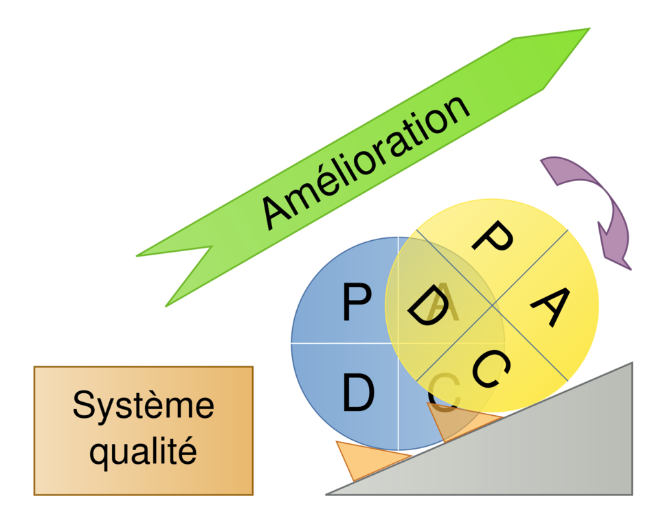
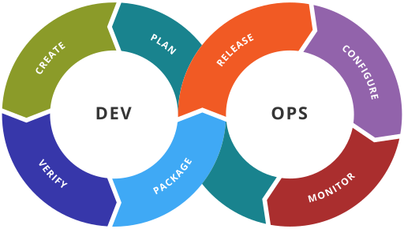

Introduction
Écrire un livre sur la démarche et les outils DevOps, un sujet brûlant que certains aimeraient voir disparaître.
Pour moi, point de doute après toutes ces années passées à améliorer, fiabiliser, automatiser et optimiser les chaînes de livraison sur lesquels j'ai travaillé.
- C'est quoi DevOps ?
- Par quoi dois-je commencer ?
- Comment je débute si je veux maîtriser les outils Devops ?
Ce sont des questions qui reviennent souvent. C'est pour y répondre que j'ai décidé de créer ce dépôt sous Github
Objectifs de ce livre
Pour mettre en œuvre avec succès le DevOps, on se doit de connaître :
- La démarche DevOps
- Un certain nombre de types d'outils ou de technologies dont la liste est fonction du poste que vous souhaitez occuper où que vous occupez.
Donc ce livre a pour objectifs :
- D'aider à démarrer sa formation et à monter en compétences sur la culture et/ou les outils DevOps.
- De recenser tous les liens pointant sur du contenu en français et gratuit pour remplir cet objectif.
- D'évoluer au fil du temps via vos contributions
La démarche DevOps
Dans cette partie, je vais juste rappeler un peu l'histoire, les grands principes et objectifs de la démarche DevOps. Si vous voulez en apprendre plus je vous renvoie à la lecture de ces trois ouvrages en français :
- Découvrir DevOps - 2e éd. : L'essentiel pour tous les métiers
- Mettre en œuvre DevOps - 3e éd. - Comment évoluer vers une DSI agile
- DevOps - Intégrez et déployez en continu de Ernesto Leite
D'ailleurs ce chapitre est en sorte une petite synthèse.
Comment est née la démarche DevOps
Contrairement à des normes, comme l'ITIL qui ont été commandé par des organisations ou des gouvernements, le mouvement DevOps est lui issu d'une succession de conférences, dont les DevOpsDays, qui se sont déroulées à partir de 2008. C'est pour cette raison qu'il n'existe pas de définition écrite ou de manifeste comme pour les méthodes agiles. Parmi les noms les plus connus et reconnus, nous retrouvons :
- Andrew Shafer organisateur de la première conférence “Agile Infrastructure.” en aout 2008 à Toronto. Il n'y eut qu'une seule personne présente Patrick Debois.
- John Allspaw et Paul Hammond qui en Juin 2009 donne une conférence intitulé "10 déploiements par jour : coopération Dev et Ops sur Flickr."
- Patrick Debois qui est à l'origine du mot DevOps en créant les DevOpsDays.
- Damon Edwards et John Willis auteur des principes connus sous le nom de CAMS ou CALMS.
- Jez Humble auteur du livre Accelerate
- Gene Kim auteur du livre The Phoenix Project
Le constat qu'ils tiraient est que le cloisonnement des équipes de développement et des opérations était contre-productif.
Un peu d'histoire
Revenons en arrière pour comprendre d'où le DevOps tire ses racines. On va partir loin dans le temps jusqu'au début de l'ère industrielle. Nous allons nous intéresser aux méthodes d'organisation du travail, puis aux méthodes de gestion de projets sans trop rentrer dans les détails. Pour le moment cela vous paraitra étrange, mais au fil de la lecture, vous comprendrez pourquoi certaines méthodes ont été retenues dans la démarche DevOps au fil de son élaboration.
Méthodes d'organisation du travail
Dès l'aube de la révolution industrielle, on est au XVIIIe siècle, on a cherché à améliorer la productivité pour passer de l'artisanat à la production de masse de biens de consommation.
L'organisation Scientifique du Travail
La première fut le taylorisme ou aussi appelé OST, organisation scientifique du travail. Taylor est parti du constat qu'il est impossible de réaliser une production de masse sans un minimum d'organisation et de discipline. Les grands principes :
- Le travail complexe est décomposé en tâches élémentaires et hiérarchisées qui s'exécutent de manière successive et répétitive
- Chaque titulaire de tâche se voit assigner un poste physiquement fixe (ou comportant très peu de déplacements)
- Les objets à produire ou transformés sont rendus mobiles par un procédé de convoyage adapté.
Mais, largement critiqué par Charlie Chaplin dans les temps Modernes cette méthode de travail montre ses limites par son côté aliénant ayant même des répercutions sur la santé physique et mentale des opérateurs. Les hommes étaient devenus des machines où il n'y avait plus de place pour la réflexion. Pourtant, ces méthodes d'Organisation existent toujours dans certains domaines.
Le Toyotisme appelé Lean
Le Lean, maigre en anglais, est une méthode de gestion de production mise au point au Japon dans les années 50, par Toyota, d'où son nom de Toyotisme. Cette méthode est axée sur la recherche de la performance que ce soit en termes de productivité, de qualité, de délais, et de coûts. Son émergence est due au contexte devenu de plus en plus concurrentiel : car les consommateurs recherchent avant tout le meilleur rapport qualité/prix.
Le Lean, cette fois fait appel à l'ensemble des employés d'une entreprise pour identifier puis éliminer toutes les activités non rentables de l'entreprise. Le Lean cherche donc à supprimer tous les gaspillages, muda en japonais :
- La surproduction générant de stocks inutiles et coûteux.
- Les stocks inutiles entre les postes.
- Les goulets d'étranglement donnant des délais d'attente inutiles.
- Les traitements superflus n'apportant pas de valeur ajoutée.
- Les déplacements inutiles pour éviter les pertes de temps.
- Les outils inadaptés faisant baisser la qualité de production.
- Les défauts de fabrication afin d'éviter les retouches et les rebuts.
Cette démarche ne s'arrête jamais, car elle repose sur la notion d'amélioration continue, kaizen en japonais, avec la participation de tous les employés.
Pour répondre à ses objectifs de nombreux outils ont été mis au point. On retrouve la méthode des 5S, le SMED, le TOM, le PDCA ou aussi appelé roue de Deming. PCDA pour Plan ➔ Do ➔ Check ➔ Act. Ce cycle reboucle jusqu'à ce qu'une solution atteigne l'objectif fixé.

Par la suite le Lean a été décliné à d'autres domaines que l'industrie :
- A la gestion des organisations avec le Lean management.
- à l'industrie informatique avec le Lean IT
- au développement Logiciel avec Lean software development
- aux services Lean Services
- ...
La gestion de projets
Les méthodes d'organisation du travail ne s'attachent qu'à la recherche de l'optimisation de la productivité. Mais quelles méthodes existent pour gérer des projets ? Petit ou grand. Des projets l'homme en a toujours eu sinon nous ne serions où nous en sommes actuellement. Pour construire une pyramide, un temple ou un pont voir une centrale nucléaire, il faut s'organiser sinon on va perdre du temps voir rencontrer un échec. En effet, il va falloir coordonner un ensemble d’activités et d’actions dans le but de répondre à un besoin client, et cela, dans un délai déterminé. Je vais détailler les deux grandes familles de méthodes de gestion de projets que l'on rencontre dans le domaine du développement logiciel.
Les méthodes traditionnelles
Une méthode "traditionnelle" est composée d'étapes qui se succèdent les unes après les autres. Par exemple pour le modèle en Cascade :
- Recueil des exigences du client.
- Constitution du cahier des charges fonctionnel par analyse des exigences du client et ajout de celles demandées par des normes.
- Conception du produit afin qu'il soit fabriqué en série et remplisse les exigences du cahier des charges
- Pre-Production : le produit est assemblé et déployé
- Validation : le produit est testé afin de voir s'il répond aux exigences
- Production : le produit est installé et utilisé.

Chacune de ces étapes ne peut commencer sans que la précédente ne soit terminée, conduisant à un effet tunnel. Il peut se passer de très longues périodes entre l'expression des besoins du client et la mise en service du produit.
Lors de la livraison, même si le délai est respecté, on constate souvent des écarts entre les besoins exprimés par le client et le produit livré. De plus, certaines fonctionnalités se révèlent finalement inutiles alors que d'autres, découvertes en cours de route, pourraient donner plus de valeur au produit.
Les méthodes Agiles
Les méthodologies agiles sont différentes au sens où le développement d'un produit devient incrémentale et donne une place importante au client tout au long de ce processus.
Au démarrage du projet, on ne s'attache qu'à déterminer des objectifs à court terme pour en élaborer une première version. Ensuite en fonction du retour du client et des résultats des tests, le produit évolue à chaque itération en cherchant toujours à répondre aux besoins du client.
Les méthodes agiles mettent un point d’honneur à renforcer les relations entre les membres de l’équipe projet, mais également entre l’équipe et le client.
Quelques méthodes Agiles : RAD (rapid application development), Scrum, XP (eXtreme Programming), ASD (Adaptive software development), FDD (feature driven development), BDD (Behavior-driven development), Crystal Clear, ... Safe et Less
Le manifest Agile
En 2001, dix-sept grands noms du développement logiciel se sont réunis pour tenter d'unifier leurs méthodes respectives. De cette réunion est née le manifest Agile. Ce manifest agile s'appuie sur quatre valeurs et de douze principes fondateurs.
Les quatre valeurs du Manifest Agile
Les 4 valeurs du manifest Agile :
- Les individus et leurs interactions plus que les processus et les outils
- Des logiciels opérationnels plus qu’une documentation exhaustive
- La collaboration avec les clients plus que la négociation contractuelle
- L’adaptation au changement plus que le suivi d’un plan
Les quatre valeurs du manifeste agile ont été déclinées en douze principes afin d'aider opérationnellement les équipes qui souhaitaient les suivre.
Les 12 principes Agile
- Notre plus haute priorité est de satisfaire le client en livrant rapidement et régulièrement des fonctionnalités à grande valeur ajoutée.
- Accueillez positivement les changements de besoins, même tard dans le projet. Les processus Agiles exploitent le changement pour donner un avantage compétitif au client.
- Livrez fréquemment un logiciel opérationnel avec des cycles de quelques semaines à quelques mois et une préférence pour les plus courts.
- Les utilisateurs ou leurs représentants et les développeurs doivent travailler ensemble quotidiennement tout au long du projet.
- Réalisez les projets avec des personnes motivées. Fournissez-leur l’environnement et le soutien dont ils ont besoin et faites-leur confiance pour atteindre les objectifs fixés.
- La méthode la plus simple et la plus efficace pour transmettre de l’information à l'équipe de développement et à l’intérieur de celle-ci est le dialogue en face à face.
- Un logiciel opérationnel est la principale mesure d’avancement.
- Les processus Agiles encouragent un rythme de développement soutenable. Ensemble, les commanditaires, les développeurs et les utilisateurs devraient être capables de maintenir indéfiniment un rythme constant.
- Une attention continue à l'excellence technique et à une bonne conception renforce l’Agilité.
- La simplicité – c’est-à-dire l’art de minimiser la quantité de travail inutile – est essentielle.
- Les meilleures architectures, spécifications et conceptions émergent d'équipes autoorganisées.
- À intervalles réguliers, l'équipe réfléchit aux moyens de devenir plus efficace, puis règle et modifie son comportement en conséquence.
Pourquoi la démarche DevOps est-elle apparue ?
Maintenant que nous avons vu les différentes méthodes de production et de gestion de projets attachons à comprendre pourquoi la démarche DevOps est-elle apparue. Quel problème tente-t-elle de résoudre ?
Il faut se rappeler qu'en 2008, cette date marque les débuts de ce mouvement, une grande majorité des entreprises était découpé en équipes. Parmi ces équipes on retrouvait :
- les développeurs : en charge d'écrire du code, d'apporter de nouvelles fonctionnalités et de corriger des bugs. Leurs préoccupations : apportés le plus rapidement des changements pour répondre aux besoins du client.
- les opérations : en charge de créer et de maintenir l'infrastructure hébergeant ces applications. Leurs préoccupations : stabiliser et garantir la disponibilité de celle-ci pour répondre aux exigences du client. Dans les opérationnelles, on trouve les personnes en charge de d'administrer, de sécuriser et de connecter les équipements.
Nous voyons bien que ces équipes ayant des préoccupations antagonistes ne sont pas faites pour s'entendre. En effet, les mises en production régulières font peser un risque sur la stabilité d’une application.
Pour ne pas arranger les choses, les équipes de développement utilisaient de plus en plus les méthodes agiles augmentant le nombre de mises en production, alors que celles des "ops" continuaient à travailler en méthode traditionnelle. De plus ces équipes avaient des budgets et des managers différents et ne communiquaient que par le biais de demandes de services, request en anglais, et de changements, change en anglais. Cela conduisait à des incompréhensions, des allers-retours à répétition, a beaucoup d'incidents, mais surtout à une faible vélocité.
Dans de telles conditions, un changement devenait nécessaire. Ces deux équipes devaient se rapprocher et travailler ensemble avec les mêmes objectifs et les mêmes méthodes.
C'est à travers des conférences dont les DevOpsDays qu'est né cette démarche de réconciliation. D'ailleurs le mot DevOps s'est imposé lors de l'organisation de la première d'entre elles par Patrick Debois en 2009 dans la ville de Gand en Belgique. Une contraction de Development et Operations pour symboliser leur rapprochement nécessaire.
Dans le prochain chapitre, nous verrons sur quelles méthodes et outils reposent le DevOps.
Qu'est-ce que le Devops
La philosophie DevOps est une combinaison de principes, de pratiques et d'outils visant à améliorer la capacité d'une entreprise à livrer à un rythme élevé des applications et des services d'infrastructures.
Ils tirent ses racines des méthodes Agiles et du Lean que nous avons vu dans le chapitre précédent. Il est important de comprendre tout de suite que le DevOps n'est pas une méthode, mais plutôt une culture. De même, il ne repose pas sur l'utilisation d'outil précis, mais plutôt, il les utilise pour atteindre les objectifs fixés. D'ailleurs quels sont ces objectifs ?
Les Objectifs du DevOps
Sans directions claires comment définir le chemin à emprunter. Donc les auteurs ont fixé des objectifs clairs et atteignables. Chacun pouvant les adapter à son niveau de connaissances et de pratique, mais en cherchant sans cesse à s'améliorer.
La vélocité
Plus vite, vous publiez de nouvelles fonctionnalités et corrigez des bogues, plus vite, vous pourrez répondre aux besoins de vos clients et gagner en vélocité.
Fiabilité
Il faut généraliser l'utilisation des pratiques comme l'intégration et le déploiement continus (nous les verrons plus tard) pour assurer la qualité du delivery. Il faut aussi généraliser l'utilisation des systèmes de supervision et de journalisation pour rester informé sur les performances de l'application.
Sécurité
La sécurité ne doit pas être sacrifiée lors de la mise en pratique du DevOps. Il faut mettre en place des outils de conformité automatisés pour vérifier que le code n'embarque pas des secrets et que la configuration d'un équipement ou d'un middleware ne laisse une faille ouverte. Par contre, si les personnes en charge de la sécurité imposent des restrictions aux développeurs, elles doivent aussi fournir des solutions pour ne pas tuer la créativité.
Évolutivité
Afin de garantir l'évolutivité, nous devons garantir que les environnements de développement, de tests, de préproduction sont à l'image de ceux de la production. Par exemple, l'infrastructure as code peut nous aider à gérer ces environnements de manière efficace.
La satisfaction du client
C'est l'objectif le plus important. Nous devons répondre à ses besoins et à ses exigences dans un délai raisonnable.
Les principes du Devops
Le Devops repose avant tout sur des principes, c'est pour cela que nous parlons de philosophie ou culture DevOps. Parmi les principes, nous retrouvons ceux définis en 2010 par Damon Edwards et John Willis avec l'Acronyme CAMS qui a évolué ensuite vers CALMS.
Le CALMS
CALMS est l'acronyme de « Culture, Automation, Lean, Measurement and Sharing » (culture, automatisation, rationalisation, mesure et partage) où toutes les notions importantes. DevOps ne se limite pas à de l'automatisation comme on l'entend souvent.
[C]ulture
Pour qu'un projet aboutisse, nous devons partager la même vision, les mêmes objectifs et le même vocabulaire. Il faudra donc veiller à ce que tout le monde soit formé.
[A]utomatisation
On va alors automatiser pour libérer les employés des tâches répétitives sans valeur ajoutée. Elle permet également de limiter les erreurs (surtout humaine) et optimiser les processus.
Mais attentions à ne pas construire des usines à gaz, appelé communément appelés monolithes, où la complexité limitera la créativité, demandera beaucoup de maintenance et finira inexorablement en échec.
[L]ean : Se concentrer sur ce qui donne de la valeur à notre produit
La rationalisation implique la réduction des excès et des gaspillages. Par exemple en limitant le nombre et la durée des réunions, réduisant la taille des équipes, en évitant de recourir à des outils inadaptés et onéreux ne couvrant qu'une partie d'un besoin. Cela passe aussi par l'optimisation de toutes les tâches pouvant provoquer des goulets d'étranglement ou consommateur de temps CPU comme l'analyse de code, l'intégration, de tests, de scans de sécurité. Même si ces tâches sont masquées, car effectuées automatiquement, elles ont un cout. On parle dans ce cadre de FinOps.
[M]easurement : A-t-on atteint l'objectif ?
Pour pouvoir contrôler que des objectifs sont atteints et mettre en place des plans d'actions pour corriger ou améliorer si besoin, il est nécessaire de mettre en place des indicateurs pertinents. Parmi ces indicateurs, on retrouve :
- Time to deploy : Mesurer le temps pour déployer un applicatif, ou pour mettre en production la modification d'une seule ligne de code. On calcule le temps passé depuis le commit dans le gestionnaire de sources jusqu'à son déploiement.
- User Satisfaction : l'idée est d'obtenir un retour continue de la part des utilisateurs. Il faut comprendre les usages, mais également comprendre si l'utilisateur est content d'une fonctionnalité et du produit. C'est la donnée qui à mon sens est la plus importante, car elle représente la finalité du travail effectué.
- Mean-Time To Recovery: temps moyen pour réparer, exprime la moyenne des temps de tâches de réparation. Il est calculé en additionnant les temps actifs de maintenance ainsi que les temps annexes de maintenance, le tout divisé par le nombre d'interventions.
- Et bien d'autres...
[S]haring Travailler ensemble pour atteindre nos objectifs
Il est nécessaire que les personnes composant cette équipe soit transparente et partage leurs connaissances. Mais aussi entendent les opinions, les remarques, les difficultés voir les échecs de chacun.
Pratiquer le CALMS
Il s'agit de garder à l'esprit ces cinq principes, à les cultiver et les renforcer sans cesse. Ce cadre n'est pas restrictif, mais peut s'adapter aux particularités de chaque équipe ou entreprise.
Le cycle de vie DevOps
Le cycle de vie Devops est représenté par un signe infini permettant de bien rappeler sa nature continue et itérative. On retrouve dans cette représentation la suite des phases par lequel un projet doit passer à chaque révolution. Une révolution, appelée Sprint, doit avoir une durée limitée dans le temps, en général 2 semaines.

Les différentes phases du cycle de vie DevOps
- Plan : Cette phase permet de définir les objectifs et les exigences attendues à la fin d'un cycle.
- Create : Cette phase inclut la conception logicielle et la création du code logiciel et s'appuie sur des logiciels de gestion de version.
- Verify : Cette phase comprend des tests, qu'ils soient manuels ou automatisés, visant à assurer une non-régression du code suite à une modification.
- Package : Cette phase consiste à assembler le code et intégrer ses composants dont il dépend et d'en faire un artefact qui sera utilisé sur l'ensemble des environnements.
- Release : Cette phase consiste à déployer les artefacts en s'appuyant sur des outils permettant de séquencer ces opérations.
- Configure : Cette phase consiste à configurer les environnements.
- Monitor : Cette phase permet de collecter des informations permettant d'identifier des problèmes affectant le logiciel en production.
Mettre en Oeuvre la démarche DevOps
Maintenant que vous connaissez la démarche DevOps et que vous avez compris qu'il s'agit en fait d'une philosophie plutôt qu'une méthode, nous allons comment le mettre en place dans votre entreprise.
Le plus important des principes de la démarche DevOps est d'abattre les murs entre les équipes afin de favoriser la communication. Il est donc fortement recommandé de promouvoir le travail entre les équipes et pas simplement de développement et d'exploitation. Il est important de réunir toutes les personnes en charge du développement d'un produit et de son exploitation sur une infrastructure informatique. Cela comprend les développeurs, les testeurs, les administrateurs systèmes, les administrateurs réseau, les administrateurs sécurité, mais aussi les personnes en charge de l'assurance qualité qui collectent les mesures et le retour client. Leur objectif commun étant de mettre en œuvre pour fournir et déployer un logiciel, et cela, de manière faible et sûre. En fait ce sont toutes les personnes que l'on retrouve dans les différentes phases du cycle de vie Devops : Planification, Création, Tests, Intégration, Déploiement, Configuration et Mesure.
Mise en place d'une équipe transverse
La première étape est de ce fait la constitution de cette équipe transverse regroupant toutes les personnes intervenant dans le cycle Devops. Cela ne va pas sans heurter les habitudes et ce changement doit être conduit. Il ne faut pas non plus sortir complètement chacun de ses intervenants de leurs équipes respectives, sinon chacune utilisera ses méthodes et ses outils et il n'y aura plus de cohérence au sein de l'entreprise.
Par exemple votre équipe transverse Devops peut être constitué d'un chef d'équipe, d'un responsable produit, d'un coach agile, d'un architecte, d'ingénieurs systèmes et réseau, d'un ingénieur sécurité, de développeurs, d'un intégrateur et d'un testeur.
Vous avez remarqué à aucun moment, je n'ai parlé d'un ingénieur Devops. En fait cela n'existe pas. Une équipe est Devops est une équipe où chacun est responsable de tout. En fait le coach agile et le manager d'équipe doit être compétent sur la Démarche DevOps et ce sont eux qui doivent guider le reste de l'équipe. Pour garantir la cohérence du système informatique, il est important que les architectes des différentes équipes travaillent ensemble.
Culture d'échange
Afin de ne pas retomber dans les travers de la mise en place de silos par produit cette fois, il est important de mettre en place des rituels favorisant l'échange entre toutes les équipes produits. Durant ces rituels, ils pourront échanger sur leurs victoires, mais aussi sur leurs défaites respectives.
L'approche CI/CD
Chaine d'Outils Devops
Les adeptes des pratiques DevOps intègrent souvent des outils compatibles DevOps dans leur « chaîne d'outils » pour rationaliser, accélérer et automatiser davantage les différentes étapes du workflow (ou « pipeline ») de fourniture des logiciels. Ces outils renforcent les principes fondamentaux du DevOps tels que l'automatisation, la collaboration et l'intégration entre les équipes chargées du développement et des opérations. Voici quelques exemples d'outils employés à différentes étapes du cycle de vie DevOps.
- Planification: Jira, Azure DevOps,
- Réalisation:
- Assemblage: Docker, Ansible, Puppet, Chef, Gradle, Maven ou JFrog, Artifactory.
- Test: JUnit, Codeception, Selenium, Vagrant, TestNG ou BlazeMeter, .
- Déploiement: Puppet, Chef, Ansible, Jenkins, Kubernetes, OpenShift, OpenStack, Docker ou Jira.
- Exploitation: Ansible, Puppet, PowerShell, Chef, Salt ou Otter.
- Supervision: New Relic, Datadog, Grafana, Wireshark, Splunk, Nagios ou Slack
Les fiches Métiers
Developpeur
Intégrateur
Administrateur Réseaux
Administrateur Sécurité
Ingénieurs de Tests
SRE
Les outils Devops
Maintenant que vous avez de bonnes notions de ce qu'est la démarche DevOps, il est temps d'aborder les outils permettant d'en atteindre les objectifs.
Je vous propose ce mind-map qui représente un peu tous les outils que vous serez amené à rencontrer le plus souvent :
- en violet les plus courants
- en bleu les moins courants
- en jaune les très peu rencontrés (mais c'est bien de les connaître de nom)
Si vous débutez, il faut suivre l'ordre indiqué par les nombres devant les grands sujets

- Administration de serveurs: Savoir configurer et dépanner un serveur Linux ou Windows
- Langages de Programmation: Savoir écrire des petits programmes
- Connaitre les rudiments des réseaux et de la Sécurité Informatique(Adresse IP, Firewalls, Routage)
- Configuration et maintenance de serveurs: WEB, Cache et de Base de Données.
- Savoir écrire du code d'infrastructure
- Savoir écrire des pipelines de CI/CD
- Savoir construire et Orchestrer des conteneurs: applications cloud native
- Connaître les principaux Clouders.
- Mise en place d'outils de Surveillance et de Centralisation de logs
Vous pouvez démarrer plusieurs sujets en parallèle, mais pas trop tout de même. Par exemple pour la partie Administration de Serveurs, vous pouvez lire en // la configuration réseau. Vous pouvez aussi regarder la construction de VM avec Vagrant out Terraform pour réaliser vos exercices.
Administration de serveurs
Linux
Livres gratuits
- Programmation Bash
- Guide avancé d'écriture des scripts Bash
- Le cahier de l'administrateur Debian
- Apprenez BASH
Livres
- LINUX - Maîtrisez l'administration du système (6e édition) de Sébastien Rohaut
- Administration Linux par la pratique - Tome 1 : les fondamentaux de l'administration système de Sébastien Chazallet
- Linux - Administration système et exploitation des services réseau (4e édition) de Philippe Blanquet
- Administration Linux par la pratique de Kiki Novak
- LINUX : GUIDE DE SURVIE 2e édition de Scott GRANNEMAN
- Haute disponibilité sous Linux - De l'infrastructure à l'orchestration de services (Heartbeat, Docker, Ansible, Kubernetes) de Charles Sabourdin
MOOC
Sites
Vidéos
- xavki 84 vidéos
Windows
Livres gratuits
Livres
MOOC
Langages de Programmation
* [Comptes twitter](#comptes-twitter)
Comptes twitter
Outils
Gestion de versions de code
Python
Site officiel : Python.org
Livres gratuits
- Cours de Python
- Apprendre à programmer avec Python
- Introduction à la programmation
- Le guide de l’auto-stoppeur pour Python!
- Une introduction à Python3
- Apprenez Python
Livres
- Apprenez à programmer en Python de Vincent Le Goff
- Python 3 - Les fondamentaux du langage de Sébastien Chazallet
MOOC
Golang
Site officiel : Go.dev
Livres Gratuits
Livres
- Le langage Go - Les fondamentaux du langage: Les fondamentaux du langage de Frédéric G. Marand
- PROGRAMMER EN GO : Pourquoi ? Comment ? de Rudy Rigot
MOOC
Sites
Site français : golang.io/fr/ : Des informations et des tutoriels.
Rust
Site officiel : Rust-lang.org (Fr).
Livres Gratuits
Livres
- Programmer avec Rust - pour une programmation système rapide et sûre de Jim Blandy et Jason Orendorff
- Rust: Développez des programmes robustes et sécurisés de Benoît Prieur
MOOC
Sites
- Tutoriels Rust (pleins de liens)
Videos
-
Introduction au langage Rust avec Visual Studio Code et Rustlings par Pentiminax
-
Parlons peu, parlons rust par @o0ignition0o
Ruby
Site officiel : Ruby-lang.fr (Fr).
Livres Gratuits
Livres
- Ruby on Rails de Dave Thomas
MOOC
Sites
PHP
Site officiel : www.php.net/manual/fr
Livres Gratuits
Livres
- PHP 8 - Développez un site web dynamique et interactif de Olivier Heurtel
- Design Patterns en PHP - Les 23 modèles de conception : descriptions et solutions illustrées en UML2 et PHP (2e édition) de Sébastien Ferrandez
MOOC
Sites
Gestion de Version de Code
Git
Outils de Build
Makefile
Livres gratuis
Sites
Editeurs de Code
Vim
Livres gratuits
Liens
Vscode
Liens
Réseaux et Sécurité Informatique
Réseaux
Livres gratuits
Livres
- Réseaux 6e édition de Andrew Tanenbaum
MOOC
Configuration et maintenance de Serveurs
- 1. Serveurs WEB
- 2. Serveurs de Cache
- 3. Base de Données
1. Serveurs WEB
1.1. Apache
Site officiel: apachage.org
1.1.1. Livres Gratuits
1.1.2. Livres
- Installation et configuration d'un serveur internet - (BIND, Apache, NGINX, Dovecot, Postfix...) Robert La Lau
- Apache 2.4 - Installation et configuration de Nicolas Martinez
1.1.3. MOOC
1.1.4. Sites
1.1.5. Vidéos
1.2. Nginx
1.2.1. Livres Gratuits
1.2.2. Livres
- Nginx en Action de Derek Dejonghe
- Installation et configuration d'un serveur internet - (BIND, Apache, NGINX, Dovecot, Postfix...) de Robert La Lau
1.2.3. MOOC
1.2.4. Sites
2. Serveurs de Cache
2.1. Redis
2.1.1. Livres Gratuits
2.1.2. Livres
2.1.3. MOOC
2.1.4. Sites
2.2. Memcached
2.2.1. Livres Gratuits
2.2.2. Livres
2.2.3. MOOC
2.2.4. Sites
3. Base de Données
3.1. Généralités
3.1.1. Livres Gratuits
3.1.2. Livres
3.1.1. MOOC
3.1.3. Sites
3.2. MySQL et MariaDB
3.2.1. Livres Gratuits
3.2.2. Livres
- MySQL 8 - Administration et optimisation de Stéphane Combaudon
- MariaDB - Administration et optimisation de Stéphane Combaudon
3.2.3. MOOC
3.2.4. Sites
3.3. PostgreSQL
3.3.1. Livres Gratuits
3.3.2. Livres
- PostgreSQL – Architecture et notions avancées de Guillaume Lelarge et Julien Rouhaud
- PostgreSQL - Principes de base de l'utilisation de la base de données de Sébastien Lardière
- PostgreSQL - Administration et exploitation de vos bases de données (4e édition) de Sébastien Lardière
3.3.3. MOOC
3.3.4. Sites
3.3.5. Vidéos
3.4. MongoDB
Site Officiel : mongodb.com (fr)
3.4.1. Livres Gratuits
3.4.2. Livres
- MongoDB - Comprendre et optimiser l'exploitation de vos données de Sebastien Fernandez
3.4.3. MOOC
3.4.4. Sites
3.5. OracleDB
Site Officiel Oracle.com (fr)
3.5.1. Livres Gratuits
3.5.2. Livres
- Oracle 19c - Administration de Olivier HEURTEL
3.5.3. MOOC
3.5.4. Sites
Infra As Code (IAC)
Gestion de Configuration
Ansible
-
Site officiel : Ansible.com
-
Documentation : Documentation
Livres Gratuits
Livres
- Ansible - Gérez la configuration de vos serveurs et le déploiement de vos applications (2e édition) de Yannig Perré
- Red Hat Ansible Engine - Gérez l'automatisation de vos configurations Linux de Philippe Pinchon
MOOC
Sites
- Apprendre et Maitriser Ansible l'outil de gestion de configuration
- Écrire, Exécuter et Debugger des playbooks Ansible
- Écrire des rôles Ansible pour factoriser votre code
- Manipuler les données avec les filtres Ansible Partie 1
- Manipuler les données avec les filtres Ansible Partie 2
- Manipuler les données avec les filtres Ansible Partie 3
- Tester vos rôles Ansible avec molecule
- Comment utiliser les templates Jinja
- Comment utiliser des blocks dans vos playbooks et rôles Ansible
- Maîtriser les inventaires statiques Ansible
- Utiliser les inventaires dynamiques Ansible
- Formatux :Ansible niveau 1
- Formatux :Ansible niveau 2
Videos
Puppet
Site Officiel : puppet.com
Livres Gratuits
Livres
MOOC
Sites
- Gestion de configurations avec Puppet
- Introduction à Puppet
- Gérer un fichier avec Puppet
- Hiera
- Test Unitaires
Chef
Livres Gratuits
Livres
MOOC
Sites
Salt
Livres Gratuits
Livres
MOOC
Sites
Azure Resource Manager
Livres Gratuits
Livres
MOOC
Sites
Chaos Monkey
- Site officiel : Chaos Monkey
Livres Gratuits
Livres
MOOC
Sites
- Ingénierie du chaos — Chaos Engineering in French — Partie 1 : pourquoi ?
- Ingénierie du chaos — Chaos Engineering in French — Partie 2 : Où en sommes-nous ?
Videos
Ansible
Chef
Puppet
Salt
Provisionnement
Vagrant
Site officiel vagrantup.com Documentation vagrantup.com/docs
Livres Gratuits
Livres
MOOC
Vidéos
Sites
- Apprendre et Maitriser Vagrant
- Apprendre Vagrant
- Utiliser les inventaires dynamiques Vagrant avec ansible
- Ajouter des disques à vagrant tournant sous libvirt
- Utiliser des boxes Vagrant Docker avec Windows Sytem Linux 2
- Vagrant - Les commandes à retenir
- Vagrant et la virtualisation pour faciliter le développement
Vidéos
- Tutoriel vidéo Vagrant : Créer une VM avec Vagrant | Grafikart
- Formation Gratuite Complète Vagrant pour DevOps : Déployez vos outils DevOps automatiquement + labs
Terraform
Site Officiel : terraform.io Documentation : terraform.io/docs
Livres Gratuits
Livres
MOOC
Sites
- Apprendre et Maitriser Terraform l'outil d'Infrastructure As Code
- Comprendre Terraform (infra-as-code) en 5 minutes
- Best practices Terraform (Google Cloud)
- Comprendre et manipuler ses fichiers d'état Terraform
- Industrialiser la manipulation des fichiers d'état Terraform
- Infrastructure As Code sous AWS avec Terraform
Vidéos
CloudFormation
Site Officiel : CloudFormation
Livres Gratuits
Livres
MOOC
Vidéo
Sites
- CloudFormation dans AWS
- Comment utiliser les Custom Resources ?
- Comment fonctionne CloudFormation ? Comment créer un VPC avec ce modèle ?
Vagrant
CloudFormation
Terraform
Pipelines de CI/CD :
Gitlab-CI/CD
Site officiel : about.gitlab.com Documentation : docs.gitlab.com
Livres Gratuits
Livres
MOOC
Sites
- Commencer simplement avec GitLab CI
- Comment organiser son travail avec GitLab
- Utilisation la CLI de gitlab
- Valider son Gitlab CI et le lancer localement
- Utiliser des pipelines dynamiques
- Utiliser la container registry
- Utiliser les règles de conditions
- Utiliser des pipelines parent-enfant
- Utiliser des templates de pipelines
- Optimiser la durée de vos pipelines avec les DAG
- Créer des releases
- Comment tester un rôle Ansible avec Molecule ?
Vidéos
- xavki 127 Vidéos
Github Actions
Site Officiel : github.com
Livres Gratuits
Livres
MOOC
Sites
Jenkins
Site officiel : jenkins.io Blog : Jenkins Community Blog
Livres Gratuits
Livres
MOOC
Sites
- Formatux : Serveur d’Intégration Continue Jenkins
- Introduction aux déploiements et configurations automatisés avec Puppet
Vidéos
- xavki 35 vidéos
Conteneurs et Orchestrateurs
Conteneurs
Docker
Site Officiel: docker.com
Livres Gratuits
- Introduction à Docker [PDF]
- Apprenez Docker
- Recommentation de sécurité relatives aux déploiement de conteneur Docker ANSSI-FT-082
Livres
- Docker - Pratique des architectures à base de conteneurs - 2e éd.: Pratique des architectures à base de conteneurs de Pierre-Yves Cloux Docker et conteneurs - 3e éd.: Architectures, développement, usages et outils de Pierre-Yves Cloux
MOOC
Sites
- Démarrer avec les conteneurs Docker
- Initiation à Docker
- Sécuriser l'utilisation de Docker
- Chérie, j'ai rétréci Docker: Optimisation de la taille des images
- Démarrer avec Docker
- Apprendre Docker avec une tasse de café
Vidéos
- xavki 30 Vidéos
- cocadmin : Débutez de Zéro avec Docker 8 Vidéos
- Docker sur Windows et Mac : Devoxx France
Podman
Livres Gratuits
Livres
MOOC
Sites
- Podman : Containers Dockerless
- Découvrez qu'est-ce que Podman, concurrent de Docker, l'actuel roi des conteneurs
Docker-compose
Livres Gratuits
Livres
MOOC
Sites
Vidéos
- xavki 25 vidéos
Orchestrateurs
Kubernetes
Livres Gratuits
Livres
- Kubernetes - Maîtrisez l'orchestrateur des infrastructures du futur: Maîtrisez l'orchestrateur des infrastructures du futur de Kelsey Hightower
- Understanding Kubernetes in a visual way - Aurélie Vache
- Kubernetes: Gérez la plateforme de déploiement de vos applications conteneurisées - Yannig Perré
MOOC
Sites
- Documentation
- Documentation française
- Blog
- Discuss Kubernetes
- Wiki SFEIR Kubernetes
- Introduction à Kubernetes
Vidéos
- Aurélie Vache 20 Vidéos
- xavki 72 vidéos
Nomad
Livres Gratuits
Livres
MOOC
Sites
Docker Swarm
Livres Gratuits
Livres
MOOC
Sites
- Introduction à Docker-Swarm
- Comprendre, Gérer et Manipuler un cluster Docker Swarm
- L’orchestration avec Docker Swarm
- Tutoriel Docker Swarm
Vidéos
- Xavki :
Cloud
AWS
Livres Gratuits
Livres
- AWS : Gérez votre infrastructure sur la plateforme cloud d'Amazon de Nicolas Duminil
- Amazon Web Service Guide de l'administrateur - Les bonnes pratiques pour administrer le cloud d'Amazon - collection O'Reilly de Federico Lucifredi
MOOC
Sites
GCP
Livres Gratuits
Livres
MOOC
Sites
Azure
Livres Gratuits
Livres
- Débuter avec Azure - Concepts fondamentaux et mise en œuvre de Thierry Bollet
- Microsoft Azure - Gérez votre Système d'Information dans le Cloud de Philippe Païola
MOOC
Sites
Autres
Livres Gratuits
Livres
MOOC
Sites
Surveillance
{!toc}
Logging
Zabbix
Site officiel : zabbix.com
Livres Gratuits
Livres
MOOC
Sites
Centreon
Livres Gratuits
Livres
MOOC
Sites
Prometheus
Site Officiel : prometheus.io Projet : prometheus
Livres Gratuits
Livres
MOOC
Sites
Videos
- Prometheus x Grafana par Xavki 53 vidéos
Grafana
Site Officiel : grafana.com Projet : Grafana
Livres Gratuits
Livres
MOOC
Sites
- Découvrir Prometheus et Grafana par l’exemple
- Grafana : Superviser tous vos serveurs et périphériques avec classe
OpenTelemetry
Site Officiel : opentelemetry.io Projet : OpenTelemetry
Livres Gratuits
Livres
MOOC
Sites
- Introduction à OpenTelemetry pour les débutants
- OpenTelemetry : le feedback utilisateur à la portée de tous.
Videos
- Comment OpenTelemetry peut transformer votre monitoring en unifiant vos logs
- Suivez vos applications à la trace grâce à OpenTelemetry
Monitoring :
Splunk
- Site officiel : Splunk.com/
- Blog officiel : https://www.splunk.com/en_us/blog
Livres Gratuits
Livres
MOOC
Sites
ELK
Livres Gratuits
Livres
MOOC
Sites
Vidéos
- xavki 80 vidéos
Datadog
- Site officiel : Datadog.com
- Blog officiel : https://www.datadoghq.com/blog
Livres Gratuits
Livres
MOOC
Sites
Les liens DevOps
Sites parlant du Devops
Voici une liste non exhaustive où vous trouverez de bons articles sur les outils Devops. Regardez dans le dépôt, j'y ai déposé mon export feedly avec tous les flux RSS et Atom que je suis pour faire ma veille techno. Je la mettrai à jour régulièrement. feedly.opml
Blogs Perso
- Bruno Levasseur
- dadall
- damyr
- Frédéric Léger
- grottedubarbu
- jesuisundev
- la forge
- mcorbin
- scalastic
- Stephane ROBERT
- tferdinand
- TheBidouilleur
- Zwindler's Reflection
Sociétés
- April : Promouvoir et défendre le logiciel libre
- Bearstech
- Blackcreeper
- Devoteam Revolve
- EasyTeam
- Eazytraining
- Eleven Labs
- Enix
- Ippon
- Le Journal Du Hacker
- LinkValue
- NotSoSecure Claranet Cyber Security
- OVHcloud
- Publicis Sapient
- Red Hat
- Scaleway
- Soat
- Wescale
- Zenika
- Webofmars
Articles
Livres
Communautés
Mooc
- DevOpsSec
- Découvrez la méthodologie DevOps sur OpenClassRooms
- Devenir Devops (vidéos) par xavki 60 vidéos
Chaines Youtube
- Aurelie Vache
- CocAdmin
- Compagnons du Devops
- Cookie Connecté
- Cloud Nord
- Devoxx FR
- France DevOps
- KrustyHack
- Le TechLab de Christophe Casalegno
- Limawi
- Inpulse.tv * Playlist Devops & cloud
- Xavki
Des comptes Twitters
- Aurélie Vache
- Cocadmin
- DamyR
- David Aparicio
- Idriss Neumann
- Imrane
- Jerôme Petazzoni
- Juliette Audema
- Katia HIMEUR TALHI
- Mcorbin
- Michée Lengronne
- Nicolas Hug
- Stéphane ROBERT
- TheBidouilleur
- Xavki
- Zwindler
Des slacks
Podcasts
- Dans ton kube Parle de Kubernetes
- DevObs Le magazine et observatoire du DevOps
- Electro Monkeys Les concepts et les technologies cloud natives
- Émission libre à vous de l'april #154
- Message à caractère informatique
- Radio DevOps Le mouvement DevOps
- WeSpeakCloud Les problématiques complexes comme la sécurité ou le DevOps
Conférences
- Une liste des conférences DevOps est disponible sur ce dépôt : saphoooo/impressionnant
- Plus largement, une liste de toutes les conférences tech (Dev, DevOps, etc) avec les dates de CFP est disponible sur ce dépôt : scraly/developers-conferences-agenda
Contribuer
Vos contributions sont toutes les bienvenues ! Elles doivent être non commerciales. Je me garde le droit de ne pas accepter certaines demandes.
Lignes directrices
- Ajoutez un lien ou plusieurs par pull request ou par Issue
- Le lien pointe sur du contenu en français. Excepté les liens vers les sites officiels des produits cités.
- Ajoutez une section si nécessaire.
- Évitez les doublons.
- Vérifiez votre orthographe et votre grammaire.
- Supprimez tout espace blanc de fin.